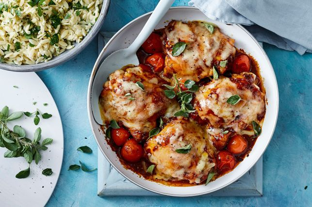

Cheesy Caprese chicken

description:
Create a new family favourite with this cheesy chicken bake.
Ingredients:
- 1 1/2 tbsp extra virgin olive oil
- 4 large skinless chicken thigh cutlets
- 3 eschalots, finely chopped
- 2 garlic cloves, crushed
- 2 tbsp balsamic vinegar
- 1 tbsp brown sugar
- 1/2 cup tomato purée
- 2 tsp finely chopped fresh oregano, plus extra leaves to serve
- 250g cherry tomatoes
- 1 1/2 cups dried risoni
- 1/2 cup chopped fresh flat-leaf parsley leaves
- 2 tsp finely grated lemon rind
- 10g butter
- 1/2 cup grated pizza cheese
Instructions:
- Preheat oven to 200C/180C fan-forced.
- Heat 1 tablespoon oil in a deep ovenproof frying pan over high heat. Add chicken. Cook for 2 to 3 minutes each side or until browned. Transfer to a plate.
- Add remaining oil to pan. Add eschalot and garlic. Cook, stirring, for 2 minutes. Add vinegar and sugar. Cook, stirring, for 1 to 2 minutes or until mixture thickens slightly.
- Add purée and oregano to pan. Bring to the boil. Add tomatoes. Return chicken to pan. Season with salt and pepper. Bake, turning halfway through, for 15 minutes or until chicken is cooked through.
- Meanwhile, cook risoni in a large saucepan of boiling, salted water, following packet directions. Drain. Return to pan. Add parsley, lemon rind and butter. Toss to combine. Season with salt and pepper. Cover to keep warm.
- Turn chicken top-side up. Top with cheese. Bake for 3 to 4 minutes or until cheese melts. Sprinkle with extra oregano. Serve with risoni mixture. Serve.
Return To Home